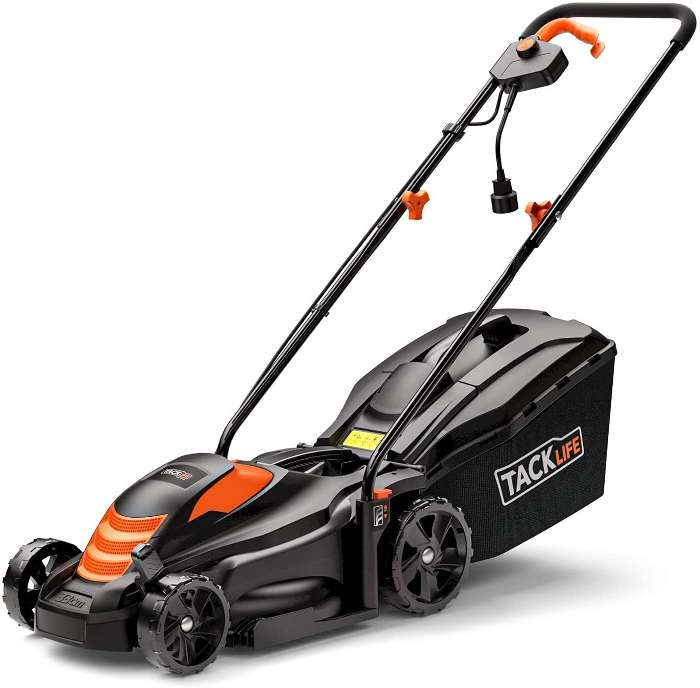

1300W TackLife
El 1300W TackLife es un cortacésped eléctrico potente y eficiente, ideal para uso doméstico en jardines de tamaño pequeño y mediano. Con su motor de 1300 W y un ancho de corte de 33 cm, este cortacésped ofrece un rendimiento excepcional en cualquier tipo de césped. Además, cuenta con un sistema de ajuste de altura de corte en 5 posiciones, que permite adaptar el corte a tus necesidades específicas.
El diseño compacto y ligero del 1300W TackLife lo convierte en una opción ideal para usuarios que buscan un cortacésped fácil de transportar y almacenar. El sistema de peine para césped asegura un corte limpio y uniforme, incluso cerca de los bordes.
No esperes más y adquiere tu 1300W TackLife para disfrutar de un jardín perfecto en todo momento.
Compra ahora